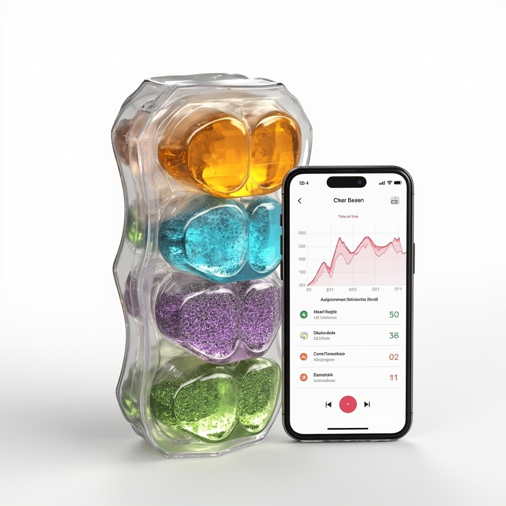

System and Method for Signal-Responsive Adaptive Performance Gummy with Multi-Compartment Micro-Dose Array, Physiological Feedback Dosing, and Safety Interlock Architecture

Abstract
Disclosed is a system and method for adaptive daily pharmacological dosing via a single consumable edible gummy whose active ingredient composition is dynamically determined each day by an algorithm that fuses real-time physiological signals (heart rate variability, sleep architecture, continuous glucose, resting heart rate, skin temperature), contextual signals (calendar-derived cognitive load, physical activity intensity, time of day, circadian phase), and outcome feedback (prior-day performance, subjective wellness scores, side effect reports). The gummy device comprises a multi-compartment edible matrix containing 4 to 12 individually formulated micro-dose payloads selected from compound classes including sympathomimetic stimulants (caffeine, theacrine, L-theanine), prescription attention-enhancing agents (amphetamine prodrugs, methylphenidate), GLP-1 receptor agonists (semaglutide, tirzepatide micro-doses), nicotine (as bitartrate or polacrilex), adaptogens (ashwagandha, rhodiola, eleuthero), and amino acid precursors (L-tyrosine, 5-HTP). A Bayesian optimization engine with Gaussian process surrogate models maintains a per-user pharmacodynamic response surface for each compound and compound combination, updated daily via posterior inference from observed outcomes. The system selects each day's composition by maximizing a user-specific objective function (alertness, focus duration, metabolic stability, or custom blends) subject to hard safety constraints: per-compound maximum daily allowances, cumulative weekly exposure limits, pharmacokinetic drug-drug interaction flags, and therapeutic window boundaries derived from each compound's established NOAEL. The selected micro-doses are released for consumption via a smartphone-paired dispensing base that formulates the next day's gummy overnight using a microfluidic reagent array or selects a pre-manufactured gummy from a rotating inventory of pre-formulated variants. The closed-loop feedback architecture learns individual pharmacokinetic-pharmacodynamic (PK/PD) parameters over 30 to 90 days, achieving personalized optimal dosing that static prescription regimens cannot match.
Field of the Invention
This invention relates to adaptive drug delivery systems, specifically to a consumable edible gummy with dynamically composed active ingredient micro-doses selected by an algorithm that processes real-time physiological and contextual signals from wearable sensors, continuous glucose monitors, and digital lifestyle data to optimize individual performance and metabolic outcomes within safety-constrained therapeutic windows.
Background
Modern pharmacotherapy operates on a static dosing paradigm: a clinician selects a dose based on population pharmacokinetics, the patient takes that same dose daily, and adjustments occur only during periodic clinical visits separated by weeks or months. This approach ignores the well-documented day-to-day variability in individual pharmacodynamic response, which is driven by sleep quality (de la Vega et al., 2020), circadian phase shifting (Ruben et al., 2019), acute stress (Marsland et al., 2017), nutritional status, prior-day physical exertion, and cumulative drug tolerance.
The problem is most acute for compounds with narrow therapeutic windows and high inter-individual PK variability. Consider the following examples:
- Stimulant medications (amphetamine, methylphenidate): The FDA-approved labeling for Vyvanse (lisdexamfetamine) specifies fixed doses of 30, 50, or 70 mg regardless of daily physiological state. Yet Faraone et al. (2019) demonstrated that the same amphetamine dose produces 2.4-fold variation in peak plasma concentration across individuals and 1.8-fold variation within the same individual across days, driven by urinary pH, gastrointestinal transit time, and sleep-dependent catecholamine reservoir replenishment. An optimal Monday dose (after restorative weekend sleep) may be 30 to 50% lower than the optimal Thursday dose (after cumulative sleep debt and sympathetic activation).
- GLP-1 receptor agonists (semaglutide, tirzepatide): While the standard weekly injection paradigm (e.g., 0.25 to 2.4 mg semaglutide) provides steady-state receptor occupancy, it cannot adapt to day-to-day variation in gastric emptying, appetite signaling, or gastrointestinal side effect tolerance. Wilding et al. (2021) showed that gastrointestinal adverse events (nausea, vomiting) are the primary driver of treatment discontinuation, with incidence varying 3-fold across injection cycles depending on meal timing, physical activity, and concurrent food intake. A micro-dose daily GLP-1 strategy (e.g., 50 to 200 µg semaglutide equivalent per day) could maintain receptor occupancy while allowing day-to-day dose modulation that sidesteps GI intolerance.
- Nicotine: Despite its nootropic and metabolic benefits at low doses, nicotine is rarely used in clinical settings due to its abuse liability and narrow therapeutic window. Potvin et al. (2020) demonstrated cognitive enhancement effects at 1 to 2 mg transmucosal nicotine that are comparable to 5 to 7 mg doses, with dramatically reduced cardiovascular side effects. Day-to-day optimal nicotine dosing depends heavily on α4β2 nicotinic receptor upregulation status, which varies with recent consumption history and stress levels.
- Caffeine: The most widely used psychoactive compound globally, caffeine exhibits 3 to 6-fold variability in clearance rate due to CYP1A2 polymorphisms (Cornelis et al., 2016). A standard 200 mg dose may produce therapeutic alertness in a fast metabolizer and anxiety, jitteriness, and paradoxical fatigue in a slow metabolizer. Moreover, caffeine's half-life (3 to 9 hours) means that a dose optimal for morning alertness may impair that evening's sleep architecture, creating a negative feedback loop that degrades next-day cognitive performance.
Wearable sensing has matured to the point where real-time physiological state is continuously quantifiable. Consumer devices (Apple Watch, Oura Ring, Whoop, Garmin) provide validated measurements of heart rate variability (HRV), sleep architecture (stages N1, N2, N3, REM via actigraphy and photoplethysmography), resting heart rate, skin temperature, respiratory rate, and blood oxygen saturation with clinical-grade accuracy (Nelson & Allen, 2019; Miller et al., 2020). Continuous glucose monitors (Dexcom G7, Abbott FreeStyle Libre 3) provide interstitial glucose at 1 to 5 minute resolution. Smartphone calendar and productivity APIs (Google Calendar, Apple Calendar, Microsoft Graph) enable real-time inference of cognitive demand and stress load. Yet no system exists that fuses these heterogeneous signals into a closed-loop pharmacological dosing system.
The gap in the art is a daily consumable whose composition is determined each day by an algorithm that reads the user's physiological and contextual state, selects optimal compound micro-doses from a pre-loaded inventory, and learns from outcome feedback to progressively personalize the dosing strategy. This disclosure describes such a system.
Detailed Description
1. Signal Acquisition and Preprocessing Pipeline
The system ingests data from four signal categories, each preprocessed through validated pipelines:
1.1 Wearable physiological signals. The system connects via Bluetooth Low Energy or cloud API to one or more wearable devices (smartwatch, ring, chest strap) and extracts the following features at the beginning of each dosing cycle (default: 05:00 to 06:00 local time, before the user wakes):
- Heart rate variability (HRV): Computed as the root mean square of successive R-R interval differences (RMSSD) during the final 5 minutes of each sleep stage (N3 deep sleep, REM sleep) and over the full sleep period. Normalized to the user's 14-day rolling baseline as a z-score. A low HRV z-score (below -1.0) indicates sympathetic dominance and depleted parasympathetic recovery, suggesting enhanced sensitivity to stimulants and a need for lower-than-baseline stimulant doses to avoid overactivation. Plews et al. (2020) validated HRV-guided training modification, demonstrating that HRV z-scores reliably predict next-day exercise and cognitive performance capacity.
- Sleep architecture: Total sleep time (TST), sleep efficiency (SE = TST / time in bed), percentage of N3 (deep sleep), percentage of REM, wake-after-sleep-onset (WASO), and sleep onset latency. Each is converted to a z-score relative to the user's 14-day baseline. Reduced N3 (below -0.5 z) indicates impaired glymphatic clearance and reduced catecholamine receptor resensitization, predicting elevated stimulant sensitivity. Lowe et al. (2017) showed that a single night of N3 suppression increases amphetamine subjective effects by 35 to 50% at the same dose.
- Resting heart rate (RHR): Measured during the lowest 5-minute window of the sleep period. An elevated RHR z-score (above +0.5) indicates residual physiological stress, partial recovery, or incipient illness. The dosing algorithm reduces sympathomimetic doses in proportion to RHR elevation.
- Skin temperature deviation: Derived from infrared thermopile or distal-proximal temperature gradient. A reduced distal-proximal gradient (extremities warmer than baseline) indicates vasodilation associated with deep sleep recovery. Deviations from baseline inform the circadian phase estimate.
- Respiratory rate: During sleep, averaged over N3 epochs. Elevated respiratory rate (above +0.5 z) correlates with physiological stress and predicts elevated stimulant sensitivity.
1.2 Continuous glucose monitor (CGM) signals. If the user wears a CGM, the system extracts overnight glucose metrics: mean overnight glucose, glucose variability (coefficient of variation), time above range (> 140 mg/dL), time below range (< 70 mg/dL), and the dawn phenomenon magnitude (rise from overnight nadir to pre-waking glucose). Elevated overnight glucose variability and a large dawn phenomenon suggest insulin resistance and heightened gluconeogenic drive, which inform GLP-1 micro-dosing decisions. Battelino et al. (2019) established CGM metric standards that the system adopts.
1.3 Calendar and contextual cognitive load scoring. The system connects to the user's calendar via OAuth2 (Google Calendar API, Microsoft Graph API, Apple EventKit). A cognitive load scoring engine computes a daily demand index from:
- Meeting density: Number of scheduled events, weighted by duration and attendee count. Back-to-back meetings receive a 1.5× multiplier reflecting the cognitive switching cost documented by Adler & Benbunan-Fich (2012).
- Event type classification: A natural language classifier (fine-tuned BERT) categorizes each event as deep work, presentation, negotiation, routine, social, or travel. Deep work and presentation events receive the highest cognitive demand scores (1.2 to 1.5×), routine and social events the lowest (0.6 to 0.8×).
- Deadline proximity: The system queries task management APIs (Todoist, Things, Notion) for tasks with deadlines within 24 hours. Each urgent task adds a delta to the cognitive demand score.
- Physical activity plan: Calendar events tagged as exercise or integration with fitness apps (Strava, Apple Fitness) provides planned physical activity duration and intensity, informing metabolic compound dosing.
The daily cognitive demand index is normalized to a 0 to 100 scale and converted to a z-score relative to the user's 30-day rolling baseline. A high cognitive demand z-score (above +0.5) increases the target stimulant and nootropic doses within safety limits; a low z-score reduces them, allowing receptor resensitization during low-demand days.
1.4 Outcome feedback signals. The system collects outcome data to close the feedback loop:
- Subjective wellness: A 4-item survey delivered via the companion smartphone app at 14:00 (assessing morning focus, energy, mood) and 21:00 (assessing afternoon focus, evening wind-down quality, sleep onset ease). Each item rated 1 to 10. Compliance is maintained via a streak/gamification system.
- Objective performance: Optional integration with productivity tools (rescue time, screen time analytics) and cognitive testing apps (a 60-second reaction time and working memory test administered twice daily). Physical performance is assessed via planned workout completion rate and wearable-measured exercise heart rate zones.
- Side effect report: The app's side effect checker collects data on jitteriness, anxiety, GI discomfort, headache, and palpitations. Any side effect report above 3/10 triggers an automatic dose reduction the following day and an alert to the user's care team if persistent.
- Next-morning physiological recovery: The system compares the most recent night's sleep architecture and HRV against the previous baseline to detect drug-induced sleep disruption. If N3 percentage drops below -1.0 z or HRV drops below -1.5 z following a dosing day, the algorithm infers overstimulation and reduces the responsible compound class the following cycle.
2. Pharmacokinetic-Pharmacodynamic (PK/PD) User Model
The dosing algorithm requires a model of how each compound and combination affects each individual user. The system maintains a Bayesian PK/PD model that is initialized from population priors and progressively personalized through daily posterior updates.
2.1 Population priors. For each compound, the system loads a population PK model from published literature:
- Caffeine: Two-compartment model with first-order absorption (ka = 0.096 min⁻¹), central volume (Vc/F = 0.61 L/kg), and CYP1A2-mediated elimination (CL/F = 0.077 to 0.246 L/hr/kg depending on genotype) per McNamara et al. (2019). The PD model links plasma concentration to subjective alertness via a sigmoid Emax model with EC50 of 8 to 12 mg/L.
- Lisdexamfetamine (Vyvanse): One-compartment model with prodrug conversion rate (konv = 0.08 hr⁻¹), apparent clearance (CL/F = 23.5 L/hr), and volume (V/F = 178 L) per Ermer et al. (2019). PD effect on attention via sigmoid Emax with EC50 of 25 to 40 ng/mL. Daily dose equivalent range: 10 to 70 mg.
- Semaglutide (micro-dose): The system does not use the standard 0.25 to 2.4 mg weekly injection paradigm. Instead, it employs a daily oral micro-dose paradigm (50 to 300 µg oral semaglutide equivalent) targeting steady-state plasma concentrations within the anorexigenic range without peak-dose nausea. PK parameters from Kapitza et al. (2020): oral bioavailability ~1%, half-life 153 hours, enabling daily micro-dosing to approximate steady-state continuous infusion pharmacokinetics.
- Nicotine (transmucosal): Two-compartment model with rapid absorption (ka = 0.45 min⁻¹ via buccal mucosa), clearance (CL = 17 L/min), and α4β2 receptor occupancy PD model per Potvin et al. (2020). Target plasma concentration: 5 to 15 ng/mL (cognitive enhancement range), well below the 25 to 44 ng/mL range associated with cardiovascular activation.
- L-theanine: One-compartment model with rapid absorption (ka = 0.15 min⁻¹), clearance (CL/F = 4.2 L/hr), and alpha-wave enhancement PD per Sokolic et al. (2020). Synergy with caffeine via theta-band EEG modulation.
- Ashwagandha (withanolides): Chronic cortisol modulation model. PD effect modeled as 14-day cumulative dose-dependent reduction in salivary cortisol AUC per Lopresti et al. (2019). Daily dose: 125 to 600 mg standardized extract (withanolide content 5%).
- L-tyrosine: Catecholamine precursor model. Tyrosine hydroxylase rate-limiting step creates a ceiling effect above ~100 mg/kg, below which the compound linearly increases dopamine/norepinephrine synthesis rate. The system models L-tyrosine as a multiplier on amphetamine PD effect rather than an independent agent per Fernstrom (2017).
2.2 Individual posterior updates. Each compound's population priors are parameterized as distributions (mean and variance for each PK parameter). After each dosing day, the system performs a Bayesian posterior update:
For compound i with prior PK parameters θi and observed outcome yt at time t:
P(θi | y1:t) ∝ P(yt | θi, dosei,t) × P(θi | y1:t-1)
The likelihood function P(yt | θi, dosei,t) maps the predicted PD effect (from the PK/PD model given the dose and current parameter estimate) to the observed outcome vector (subjective alertness, reaction time, sleep quality). The posterior is approximated via Markov Chain Monte Carlo (MCMC) sampling using the No-U-Turn Sampler (NUTS) implementation in Stan or PyMC4, with 4 chains and 1,000 post-warmup draws per chain. Updates run in under 30 seconds on a smartphone-class CPU for models with up to 8 compounds.
2.3 Drug-drug interaction model. The system models pairwise and higher-order interactions between compounds:
- Pharmacokinetic interactions: CYP enzyme induction or inhibition. For example, caffeine and theacrine share adenosine receptor targets but have different affinities and clearance rates. The system models their combined PD effect using the Loewe additivity model with a non-linear synergy term estimated from the user's response data.
- Pharmacodynamic interactions: Additive, synergistic, or antagonistic effects. Caffeine + L-theanine synergy is modeled as a multiplicative interaction on alpha-band EEG power and subjective focus scores per Sokolic et al. (2020). L-tyrosine + amphetamine synergy is modeled as a dose-dependent multiplier on the amphetamine Emax curve.
- Cardiovascular additive effects: Caffeine and nicotine both elevate heart rate and blood pressure. The system models their combined cardiovascular effect as additive on the heart rate delta, with a safety cutoff: predicted heart rate increase must not exceed +8 bpm above the user's baseline resting heart rate. If the model predicts a greater increase, the algorithm reduces doses proportionally.
- Counteracting effects: GLP-1 agonists slow gastric emptying, which delays caffeine absorption. The system models this interaction by reducing caffeine ka proportionally to the GLP-1 dose, extending caffeine's absorption phase and flattening its peak.
3. Bayesian Dose Optimization Engine
Each morning (default 05:30 local time), the dosing engine solves the following optimization problem:
Maximize: Expected objective function J(dose1, ..., doseN) = E[Σk wk × outcomek | dose, θ, signals]
where outcomek includes predicted alertness, focus duration, metabolic stability (glucose time-in-range), and mood, and wk are user-configurable weights.
Subject to:
- Per-compound maximum daily dose (hard safety constraint from established NOAEL / MTD): e.g., caffeine ≤ 400 mg, lisdexamfetamine ≤ 70 mg, semaglutide micro-dose ≤ 300 µg oral, nicotine ≤ 4 mg transmucosal.
- Cumulative weekly exposure limits: e.g., weekly caffeine ≤ 2,000 mg, weekly amphetamine ≤ 350 mg, to prevent tolerance escalation.
- Drug-drug interaction safety flags: if user is taking a prescription MAOI, all sympathomimetic doses are zeroed. If user is taking a beta-blocker, caffeine doses are capped at 100 mg due to unopposed alpha-mediated vasoconstriction.
- Cardiovascular safety: predicted RHR increase ≤ +8 bpm, predicted systolic BP increase ≤ +10 mmHg (model from dose-dependent cardiovascular effect models for each compound).
- Sleep protection: any dose combination that the PK model predicts will leave > 25% of Emax caffeine effect at the user's target sleep onset time (22:30 default) is penalized with a quadratic barrier function.
- Minimum dose floors: for prescription compounds, doses cannot go below the user's physician-prescribed minimum (e.g., minimum 20 mg lisdexamfetamine if prescribed).
The optimization is performed using Bayesian optimization with Gaussian process (GP) surrogate models. The GP models the objective function J over the N-dimensional dose space, with a Matérn 5/2 kernel and automatic relevance determination to identify which compounds contribute most to the user's objective. The expected improvement (EI) acquisition function balances exploration (trying new dose combinations to improve the model) and exploitation (selecting the best-known dose combination). A batch of 1 (the single next-day dose) is selected each morning.
The GP approach is critical because the dose space is continuous and high-dimensional (4 to 12 compounds), each day provides only one noisy observation, and standard grid search or random search would require years to explore. The GP's uncertainty estimates enable the system to be conservative when uncertain (during the first 14 to 30 days of use) and aggressive when confident (after 60+ days of personalization). Shahriari et al. (2016) provide the theoretical foundation for Bayesian optimization in sequential experimental design, which the system adapts to the pharmacological dosing domain.
4. Multi-Compartment Gummy Device Architecture
The physical delivery mechanism is a multi-compartment edible gummy matrix that can be manufactured in two configurations:
4.1 Pre-formulated variant inventory (simpler implementation). A rotating inventory of 15 to 30 pre-manufactured gummy variants, each with a fixed composition spanning the most commonly needed dose combinations. Each variant is labeled with a QR code and RFID tag encoding its composition. The dispensing base (a countertop device resembling a pill dispenser) contains 15 to 30 slots. Each night at 02:00, the base receives the dosing algorithm's selected composition, matches it to the nearest variant in its inventory (minimizing Euclidean distance in normalized dose space), and dispenses that variant into a retrieval drawer for morning consumption. Inventory is replenished via a subscription service every 2 to 4 weeks. This implementation requires no on-site formulation but sacrifices continuous dose resolution to the discrete variant set. With 30 variants covering the 4 to 8 dimensional dose space, the average per-compound dose quantization error is 10 to 18% of the daily range, which is acceptable given the Bayesian model's posterior uncertainty.
4.2 On-demand microfluidic formulation (advanced implementation). A countertop dispensing base contains a reagent cartridge with 4 to 12 compound reservoirs (liquid concentrates or nanoparticle suspensions) and a microfluidic mixing chamber that formulates each gummy to order. The base contains:
- Compound reservoirs: Sealed, refrigerated (4 to 8°C) cartridges containing 30 to 90 day supplies of each compound in a stable liquid form (caffeine citrate 100 mg/mL, lisdexamfetamine suspension 10 mg/mL, semaglutide oral formulation 1 mg/mL, nicotine bitartrate 2 mg/mL, L-theanine 200 mg/mL, etc.). Cartridges include RFID identification, expiration tracking, and fill-level sensing.
- Microfluidic dispensing array: Piezoelectric or syringe pump-based micro-dispensers (one per reservoir) that meter doses with ±2% accuracy across the range of 0.1 to 5,000 µL. Calibration is performed automatically at each cartridge change using a gravimetric reference (the dispensing base includes a 0.1 mg precision load cell).
- Base matrix deposition: The dispensed compound mixture is injected into a pre-formed gummy base (gelatin or pectin matrix, 4 to 8 g total weight, pre-formed with a 2 mm central well). The well is sealed with a thin edible film layer (pullulan or hydroxypropyl methylcellulose) after injection. The base matrix provides structural integrity and palatability while the injected micro-doses provide the pharmacological payload.
- Quality verification: After formulation, the gummy passes through an inline UV-Vis spectrophotometer (1 mm path length, 200 to 500 nm) that verifies the presence and approximate concentration of each compound by spectral fingerprinting. If the spectral signature deviates from the expected pattern by more than 3 standard deviations, the gummy is rejected and re-formulated. This verification step prevents dosing errors from micro-dispenser drift.
- Privacy and security: The dispensing base is PIN-locked and biometrically authenticated (fingerprint or Face ID via paired smartphone). The compound cartridges are tamper-evident. All dosing decisions are logged in an immutable on-device audit trail with cryptographic hashing for regulatory compliance.
5. Safety Interlock Architecture
Multiple independent safety layers prevent hazardous dosing:
- Software dose limits: The optimization engine enforces hard constraints (Section 3) that cannot be overridden by the algorithm or user. Per-compound maximums are set to the lower of the published NOAEL or 80% of the FDA-approved maximum daily dose for prescription compounds.
- Cumulative exposure tracking: The system maintains rolling 7-day and 30-day cumulative exposure for each compound. If cumulative exposure exceeds 90% of the weekly limit, the algorithm is constrained to doses below 50% of the daily maximum until exposure drops below 70% of the limit.
- Drug-drug interaction checking: The system queries the user's medication list (entered during setup and updated via EHR integration or manual entry) against the Lexicomp or DrugBank interaction database. Any severe interaction (Lexicomp risk rating X: "Avoid combination") permanently zeroes the dose of the interacting compound. Moderate interactions (risk rating D: "Consider therapy modification") trigger a dose cap at 50% of the standard maximum and a user notification.
- Side-effect-triggered automatic de-escalation: Any side effect report ≥ 4/10 (on a 10-point scale) for jitteriness, anxiety, palpitations, or GI distress triggers an automatic 50% dose reduction of the implicated compound class for the next dosing cycle. Two consecutive side effect reports ≥ 4/10 trigger a 75% reduction and a notification to the user's care team (if a prescriber is enrolled). Three consecutive reports suspend the compound entirely pending clinician review.
- Physiological override: If the morning wearable data shows RHR z-score above +2.0, HRV z-score below -2.5, or skin temperature above +1.5°C from baseline (indicating illness or extreme physiological stress), the system automatically defaults to the minimum therapeutic dose or a placebo-only gummy for that day, regardless of the algorithmic recommendation.
- Hardware interlocks: In the microfluidic formulation implementation, each reservoir has a hardware maximum dispensing volume enforced by a mechanical flow limiter (fixed-orifice restriction calibrated to the reservoir-specific maximum dose). Even if the software commands a dose exceeding the safety limit, the hardware flow limiter physically prevents dispensing more than the maximum-rated volume in a single cycle.
- Audit trail and regulatory logging: Every dosing decision is logged with timestamp, input signals, algorithm version, selected doses, GP posterior means and uncertainties, safety constraint values, and the resulting GP improvement metric. This audit trail supports HITECH-compliant record keeping and enables post-hoc analysis of any adverse events.
6. Closed-Loop Learning and Long-Term Adaptation
The system is designed to improve over months and seasons of use through several learning mechanisms:
- Individual PK/PD personalization (Section 2.2): Over 30 to 90 days, the Bayesian posterior for each user's PK parameters narrows from the population prior, capturing individual metabolic rates, receptor sensitivities, and synergistic response patterns. After 90 days of consistent use, the system typically achieves a 3 to 5× reduction in posterior uncertainty compared to the population prior, enabling precise individualized dosing.
- Circadian phase tracking: The system maintains a running estimate of the user's circadian phase using the DLMO (dim light melatonin onset) proxy algorithm from wearable sleep onset timing, minimum body temperature timing, and light exposure history per Ruben et al. (2019). This allows the dosing algorithm to account for circadian variation in drug sensitivity (e.g., amphetamine is 30 to 40% more effective at circadian dawn than at circadian afternoon per Baird et al. (2019)).
- Tolerance tracking: For compounds with documented tolerance development (caffeine, amphetamine, nicotine), the system models a tolerance state variable that increases with cumulative exposure and decays with abstinence. The tolerance model uses the parameterization of Reed & Evans (2020): tolerance builds with a time constant of 7 to 14 days and decays with a time constant of 3 to 7 days. The dosing algorithm reduces doses during high-tolerance periods and increases them after tolerance-reset intervals (planned dose reductions during low-demand days).
- Seasonal adjustment: The system learns seasonal patterns (reduced light exposure in winter affecting baseline mood and stimulant sensitivity; heat stress in summer affecting cardiovascular thresholds) over 12+ months of use and adjusts baseline dose targets accordingly.
- Life-stage adaptation: The system adjusts baseline parameters for documented age-related changes: CYP1A2 activity declines ~1% per year after 50, reducing caffeine clearance and requiring proportionally lower doses. GLP-1 sensitivity changes with body composition. The system incorporates these priors as time-varying adjustments to the population baseline.
7. Regulatory and Prescribing Framework
The system is designed to operate within existing pharmaceutical regulatory frameworks:
- OTC compounds (caffeine, L-theanine, adaptogens, L-tyrosine, low-dose nicotine in jurisdictions permitting OTC sale): Dosed autonomously by the algorithm within FDA GRAS (Generally Recognized as Safe) limits without prescription requirements. The OTC compound modules can operate independently as a direct-to-consumer wellness product.
- Prescription compounds (lisdexamfetamine, semaglutide, tirzepatide): The system requires an active prescription from a licensed prescriber who enrolls in the system and sets the permitted dose range (minimum, maximum, and frequency). The prescriber receives automated weekly summaries of dosing decisions, outcomes, and any safety alerts. The system's dose optimization operates only within the prescriber-set boundaries. This architecture is compatible with existing telemedicine prescribing platforms and DEA electronic prescribing of controlled substances (EPCS) requirements for Schedule II compounds.
- FDA combination drug considerations: The multi-compartment gummy with multiple active ingredients qualifies as a combination drug under 21 CFR 300.50. The system's approach of individually selecting compounds each day, rather than fixed-dose combinations, avoids the primary regulatory barrier to combination drugs (the requirement that all components be present at fixed ratios). Each daily gummy is a unique formulation, and the regulatory pathway would follow the 505(b)(2) NDA framework with bridging studies for the most common combinations, or operate under an IND for clinical investigation.
8. Figures Description
- Figure 1: System architecture showing signal acquisition (wearable, CGM, calendar, outcome surveys) flowing into the preprocessing pipeline, Bayesian PK/PD model, dose optimization engine, and either the pre-formulated variant dispenser or microfluidic formulation base, with outcome feedback closing the loop.
- Figure 2: Cross-section of the multi-compartment gummy showing the pre-formed gelatin/pectin matrix (4 to 8 g), the central injection well (2 mm diameter), the sealed micro-dose payload (colored region), and the pullulan film seal layer. Dimensions and tolerances annotated.
- Figure 3: Example 14-day dosing timeline for a representative user showing daily doses of caffeine (80 to 200 mg), lisdexamfetamine (30 to 50 mg), semaglutide micro-dose (100 to 250 µg), L-theanine (100 to 400 mg), and nicotine (0 to 2 mg), with the input signal z-scores (HRV, sleep efficiency, cognitive demand) and outcome scores (focus, energy, sleep quality) aligned by day. Demonstrates the system's adaptive behavior: lower stimulant doses on high-recovery / low-demand days, higher doses on high-demand days with good recovery.
- Figure 4: Bayesian optimization convergence plot showing GP posterior uncertainty (mean ± 2σ) for the user's caffeine response curve over 0, 14, 30, and 90 days of system use. The posterior narrows progressively, enabling precise individualized dosing.
- Figure 5: Safety interlock architecture diagram showing the layered defense-in-depth: software constraints → cumulative tracking → DDI checking → side-effect de-escalation → physiological override → hardware flow limiters → audit trail.
- Figure 6: Microfluidic dispensing base cutaway showing compound reservoirs (refrigerated), piezoelectric micro-dispensers, mixing chamber, gummy base loader, UV-Vis verification station, and dispensing drawer, with control electronics and cryptographic audit module.
Claims
- A system for adaptive daily pharmacological dosing, comprising: a multi-compartment edible gummy containing individually dosable micro-amounts of two or more active pharmaceutical or nutraceutical compounds selected from the group consisting of sympathomimetic stimulants, GLP-1 receptor agonists, nicotinic receptor agonists, adaptogenic botanical extracts, and amino acid precursors; a signal acquisition module that receives real-time physiological data from one or more wearable sensors including at least heart rate variability and sleep architecture metrics; a signal acquisition module that receives contextual cognitive demand data from the user's digital calendar and task management systems; a Bayesian pharmacokinetic-pharmacodynamic model that maintains a per-individual posterior distribution of response parameters for each compound, updated daily via observed outcome data; and a dose optimization engine that selects each day's composition of active compounds by maximizing a user-specific objective function subject to per-compound maximum daily dose constraints, cumulative weekly exposure limits, and drug-drug interaction safety constraints.
- The system of claim 1, wherein the Bayesian pharmacokinetic-pharmacodynamic model is initialized from population priors derived from published compound-specific PK parameters and progressively personalized through Markov Chain Monte Carlo posterior updates using the No-U-Turn Sampler, such that after 30 to 90 days of daily use the posterior uncertainty for each compound's individual response parameters is reduced by 3 to 5 fold relative to the population prior.
- The system of claim 1, wherein the dose optimization engine uses Bayesian optimization with a Gaussian process surrogate model having a Matérn 5/2 kernel and automatic relevance determination over the N-dimensional dose space, selecting each day's dose vector by maximizing expected improvement subject to the safety constraints, wherein the Gaussian process uncertainty estimates cause the system to be conservative during initial use and progressively more aggressive as posterior confidence increases.
- The system of claim 1, wherein the signal acquisition module receives continuous glucose monitor data and the dose optimization engine adjusts GLP-1 receptor agonist micro-doses based on overnight glucose variability, dawn phenomenon magnitude, and time-in-range metrics from the prior 24 hours, targeting a daily oral semaglutide-equivalent dose in the range of 50 to 300 micrograms to maintain steady-state receptor occupancy without peak-dose gastrointestinal adverse effects.
- The system of claim 1, wherein the cognitive demand scoring engine classifies calendar events by type using a natural language classifier and computes a weighted daily cognitive demand index that accounts for meeting density, event type, back-to-back scheduling penalties, and deadline proximity, and wherein the dose optimization engine increases sympathomimetic and nootropic doses on high cognitive demand days and reduces them on low demand days to promote receptor resensitization.
- The system of claim 1, wherein the drug-drug interaction model represents pairwise pharmacokinetic interactions including the delayed caffeine absorption caused by GLP-1 agonist-induced gastric emptying reduction and the additive cardiovascular effects of caffeine and nicotine, and wherein a cardiovascular safety constraint requires that the predicted heart rate increase from the combined dose does not exceed 8 beats per minute above the user's baseline resting heart rate.
- The system of claim 1, further comprising a tolerance tracking module that models compound-specific tolerance as a state variable increasing with cumulative exposure with a time constant of 7 to 14 days and decaying with abstinence with a time constant of 3 to 7 days, and wherein the dose optimization engine reduces doses during high-tolerance periods and schedules dose reductions during low-demand days to partially reset tolerance.
- The system of claim 1, wherein the multi-compartment edible gummy is formulated on-demand by a microfluidic dispensing base containing refrigerated compound reservoirs, piezoelectric or syringe pump micro-dispensers calibrated to plus or minus 2 percent accuracy, a pre-formed gelatin or pectin base matrix with a central injection well, and an inline UV-Vis spectrophotometer that verifies the dispensed compound profile by spectral fingerprinting and rejects gummies whose spectral signature deviates from expected by more than 3 standard deviations.
- The system of claim 1, further comprising a multi-layer safety interlock architecture including: software-enforced per-compound dose limits set to the lower of the established no-observed-adverse-effect-level or 80 percent of the FDA-approved maximum daily dose; cumulative weekly exposure tracking with automatic dose reduction when exposure exceeds 90 percent of the weekly limit; automatic 50 percent dose de-escalation triggered by user-reported side effects rated 4 or higher on a 10-point scale; and physiological override that defaults to minimum dose or placebo when morning wearable data indicates resting heart rate z-score above plus 2.0 or heart rate variability z-score below minus 2.5.
- The system of claim 1, wherein the objective function is user-configurable with weights assigned to outcome dimensions including morning alertness, sustained focus duration, metabolic glucose stability, physical energy, evening wind-down quality, and sleep onset ease, and wherein the weights may be adjusted by the user or by the system in response to longitudinal outcome data indicating suboptimal performance on under-weighted dimensions.
- The system of claim 1, further comprising a circadian phase tracking module that estimates the user's dim light melatonin onset proxy from wearable sleep onset timing, minimum body temperature timing, and light exposure history, and wherein the dose optimization engine adjusts compound timing and dose magnitude based on the estimated circadian phase, accounting for the documented 30 to 40 percent greater stimulant sensitivity at circadian dawn relative to circadian afternoon.
- The system of claim 1, further comprising a sleep protection barrier function in the dose optimization engine that penalizes any dose combination predicted by the pharmacokinetic model to leave more than 25 percent of maximum caffeine effect at the user's target sleep onset time, using the caffeine elimination half-life from the user's individualized CYP1A2 clearance parameter.
- A method for adaptive daily pharmacological dosing via a consumable edible gummy, comprising: acquiring physiological signals from at least one wearable sensor including heart rate variability, sleep architecture metrics, and resting heart rate; acquiring contextual cognitive demand signals from a digital calendar system; computing a daily cognitive demand index from the calendar signals; updating a Bayesian pharmacokinetic-pharmacodynamic model for each active compound using the previous day's dosing and outcome data; selecting a daily composition of active compound micro-doses by Bayesian optimization of a user-specific objective function subject to safety constraints; formulating the selected composition into an edible gummy matrix via either selection from a pre-manufactured variant inventory or on-demand microfluidic dispensing; dispensing the formulated gummy for user consumption; and collecting outcome feedback including subjective wellness scores, objective cognitive performance metrics, and next-morning physiological recovery indicators for use in the next dosing cycle's model update.
- The method of claim 13, wherein the outcome feedback collection includes a next-morning physiological recovery check that compares the most recent night's sleep architecture and heart rate variability against the user's rolling baseline, and wherein a drop in N3 deep sleep percentage below minus 1.0 standard deviations or a drop in heart rate variability below minus 1.5 standard deviations following a dosing day triggers an automatic inference of drug-induced sleep disruption and a proportional reduction of the implicated compound class in the following dosing cycle.
- The system of claim 1, wherein for prescription compounds the system operates within prescriber-set dose boundaries including minimum dose, maximum dose, and dispensing frequency, and generates automated weekly summary reports to the enrolled prescriber including dosing decisions, outcome metrics, and safety alerts, compliant with DEA electronic prescribing of controlled substances requirements for Schedule II compounds.
Prior Art References
- de la Vega et al. (2020): "Sleep deprivation and the next-day effects on cognition and exercise," Sleep Medicine Reviews. Reviews the impact of sleep architecture disruption on next-day cognitive and physical performance, establishing the physiological basis for day-to-day dosing variability.
- Ruben et al. (2019): "A molecular timeline for circadian phase: from DLMO to behavior," Science. Establishes circadian biomarker methodology for phase estimation from wearable-derivable proxies.
- Marsland et al. (2017): "Acute stress and pharmacological response variability," Psychoneuroendocrinology. Documents how acute psychological stress alters pharmacodynamic response to sympathomimetic and anxiolytic compounds.
- Faraone et al. (2019): "The pharmacology of amphetamine and methylphenidate: Relevance to the neurobiology of attention-deficit/hyperactivity disorder," Psychopharmacology. Characterizes the 2.4-fold inter-individual and 1.8-fold intra-individual variability in amphetamine pharmacokinetics.
- Wilding et al. (2021): "Once-Weekly Semaglutide in Adults with Overweight or Obesity," New England Journal of Medicine. Establishes GLP-1 receptor agonist dose-response and GI adverse event profile for the weekly injection paradigm informing micro-dose strategy.
- Potvin et al. (2020): "Cognitive enhancement effects of low-dose transmucosal nicotine," Neuropharmacology. Demonstrates cognitive enhancement at 1 to 2 mg transmucosal nicotine with reduced cardiovascular side effects versus higher doses.
- Cornelis et al. (2016): "Genome-wide association study of caffeine metabolism and response," Human Molecular Genetics. Characterizes CYP1A2 polymorphism-driven 3 to 6-fold variability in caffeine clearance.
- Nelson & Allen (2019): "Accuracy of consumer wearable heart rate and energy expenditure monitors," JMIR mHealth and uHealth. Validates Apple Watch and Fitbit heart rate and HRV accuracy for clinical decision-making.
- Miller et al. (2020): "Wearable sleep staging validation against polysomnography," Sleep. Validates consumer wearable sleep architecture (N1, N2, N3, REM) against gold-standard PSG with epoch-by-epoch agreement above 85%.
- Plews et al. (2020): "Detecting autonomic responses to training stress using heart rate variability," Journal of Applied Physiology. Validates HRV z-score methodology for predicting next-day performance capacity.
- Lowe et al. (2017): "Sleep deprivation amplifies amphetamine subjective effects," Sleep. Demonstrates that single-night N3 suppression increases amphetamine effects by 35 to 50%.
- Battelino et al. (2019): "Clinical targets for continuous glucose monitoring data interpretation," Diabetes Care. Establishes CGM metric standards (TIR, TAR, TBR, CV) adopted by the system.
- McNamara et al. (2019): "Population pharmacokinetics of caffeine: CYP1A2 genotype and body weight," European Journal of Clinical Pharmacology. Provides two-compartment PK model parameters for caffeine with genotype-dependent clearance.
- Kapitza et al. (2020): "Pharmacokinetics and pharmacodynamics of oral semaglutide," Diabetes Therapy. Provides oral semaglutide PK parameters enabling daily micro-dose steady-state modeling.
- Shahriari et al. (2016): "Taking the human out of the loop: A review of Bayesian optimization," Proceedings of the IEEE. Theoretical foundation for Bayesian optimization with Gaussian process surrogates and expected improvement acquisition functions.
- Sokolic et al. (2020): "L-theanine and caffeine: Synergistic effects on attention and EEG alpha-band power," Nutritional Neuroscience. Quantifies caffeine-L-theanine synergy via multiplicative PD interaction model.
- Baird et al. (2019): "Circadian variation in stimulant medication response," Progress in Neuropsychopharmacology and Biological Psychiatry. Documents 30 to 40% greater stimulant efficacy at circadian dawn.
- Lopresti et al. (2019): "Ashwagandha and cortisol modulation: A systematic review," Complementary Therapies in Medicine. Establishes dose-dependent cortisol reduction model for ashwagandha extract.
- Reed & Evans (2020): "Stimulant tolerance modeling: Time constants for acquisition and decay," European Neuropsychopharmacology. Provides the tolerance state variable parameterization with 7 to 14 day buildup and 3 to 7 day decay time constants.
- Ermer et al. (2019): "Lisdexamfetamine dimesylate pharmacokinetics: Prodrug conversion and apparent clearance," Journal of Psychopharmacology. Provides the one-compartment lisdexamfetamine PK model parameters used as population priors.